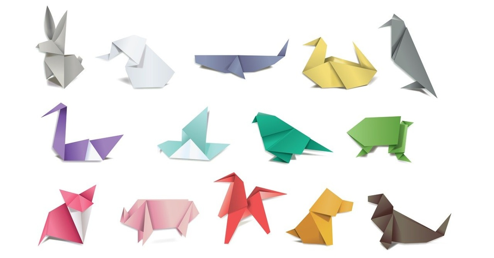

Origami Instructions and Diagrams
Origami is the art of paper folding, which is often associated with Japanese culture.
In modern usage, the word "origami" is used as an inclusive term for all folding practices, regardless of
their culture of origin.
The goal is to transform a flat square sheet of paper into a finished sculpture through folding and
sculpting techniques.
Modern origami practitioners generally discourage the use of cuts, glue, or markings on the paper.
Origami folders often use the Japanese word kirigami to refer to designs which use cuts.
